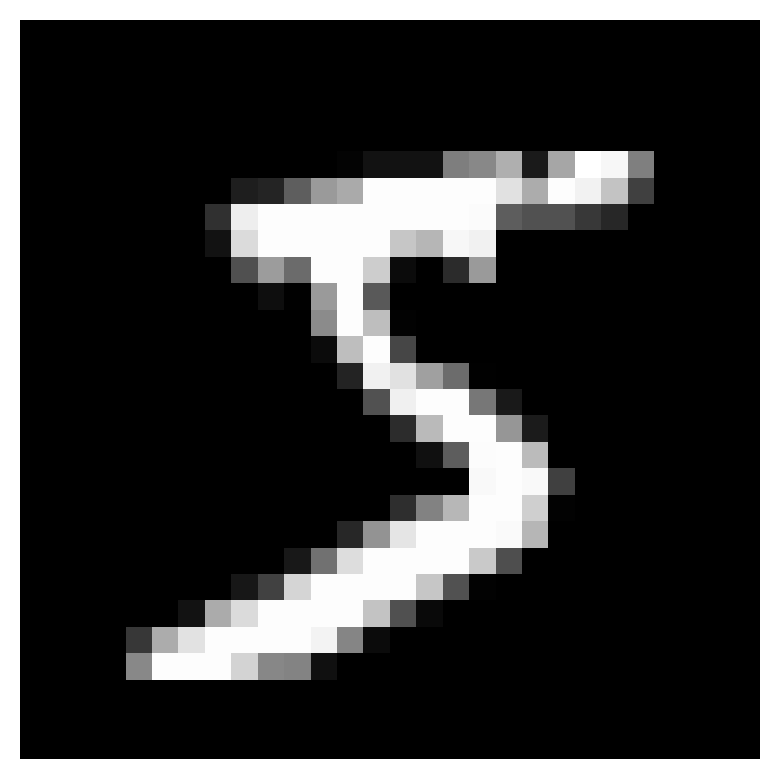
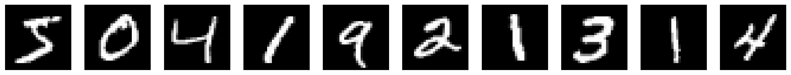
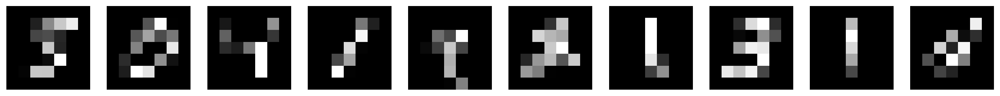
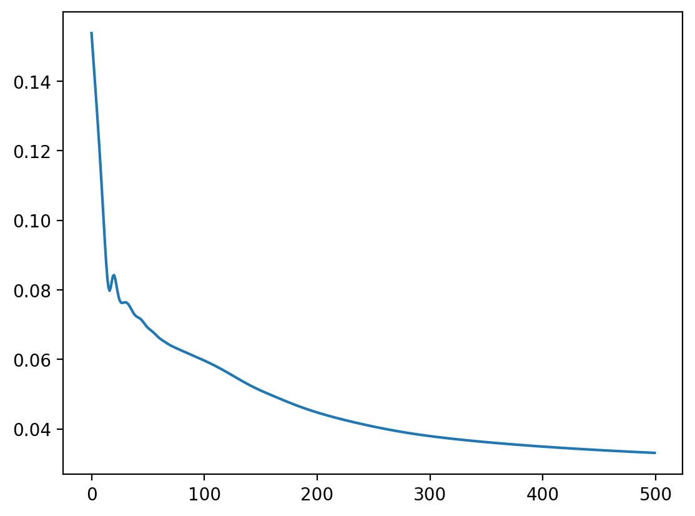
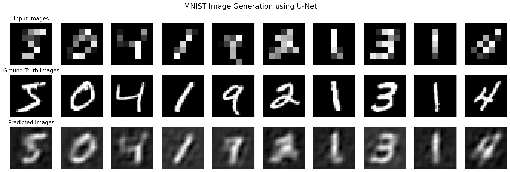
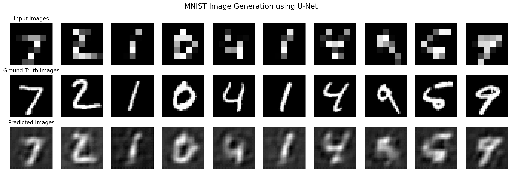

import matplotlib.pyplot as plt
import torch
%matplotlib inline
%config InlineBackend.figure_format='retina'Drawing the model (using ONNX and Netron)
# Download some MNIST to demonstrate super-resolution
from torchvision import datasets, transforms
mnist = datasets.MNIST('data', train=True, download=True, transform=transforms.ToTensor())
mnist_test = datasets.MNIST('data', train=False, download=True, transform=transforms.ToTensor())
# Displaying an image
def show_image(img):
plt.imshow(img.permute(1, 2, 0).squeeze(), cmap='gray')
plt.axis('off')
# Displaying a batch of images in 1 row and n columns
def show_batch(batch):
fig, ax = plt.subplots(1, len(batch), figsize=(20, 20))
for i, img in enumerate(batch):
ax[i].imshow(img.permute(1, 2, 0).squeeze(), cmap='gray')
ax[i].axis('off')
show_image(mnist[0][0])
show_batch(torch.stack([mnist[i][0] for i in range(10)]))
mnist[0][0].shapetorch.Size([1, 28, 28])# Downsample the images
downsample = transforms.Resize(7)
# First 10000 images X
mnist_small = [downsample(mnist[i][0]) for i in range(10000)]
mnist_small = torch.stack(mnist_small)
# First 10000 images Y
mnist_large = torch.stack([mnist[i][0] for i in range(10000)])
# Test set X
mnist_test_small = [downsample(mnist_test[i][0]) for i in range(10000)]
mnist_test_small = torch.stack(mnist_test_small)
# Test set Y
mnist_test_large = torch.stack([mnist_test[i][0] for i in range(10000)])C:\Users\HP\AppData\Roaming\Python\Python311\site-packages\torchvision\transforms\functional.py:1603: UserWarning: The default value of the antialias parameter of all the resizing transforms (Resize(), RandomResizedCrop(), etc.) will change from None to True in v0.17, in order to be consistent across the PIL and Tensor backends. To suppress this warning, directly pass antialias=True (recommended, future default), antialias=None (current default, which means False for Tensors and True for PIL), or antialias=False (only works on Tensors - PIL will still use antialiasing). This also applies if you are using the inference transforms from the models weights: update the call to weights.transforms(antialias=True).
warnings.warn(# Show the downsampled images and the original images side-by-side
show_batch(torch.stack([mnist_small[i] for i in range(10)]))
plt.figure()
show_batch(torch.stack([mnist[i][0] for i in range(10)]))
<Figure size 640x480 with 0 Axes>
mnist_small.shape, mnist.data.shape(torch.Size([10000, 1, 7, 7]), torch.Size([60000, 28, 28]))import torch
import torch.nn as nn
class SinActivation(nn.Module):
def forward(self, x):
return torch.sin(x)
# Create an instance of the custom SinActivation module
sin_activation = SinActivation()
class UNet(nn.Module):
def __init__(self, activation=sin_activation):
super(UNet, self).__init__()
# Encoder
self.encoder = nn.Sequential(
nn.Conv2d(1, 16, kernel_size=3, padding=1), # Input: (batch_size, 1, 7, 7), Output: (batch_size, 16, 7, 7)
# Use the custom activation function
activation,
nn.Conv2d(16, 32, kernel_size=3, padding=1), # Input: (batch_size, 16, 7, 7), Output: (batch_size, 32, 7, 7)
activation,
nn.MaxPool2d(kernel_size=2, stride=2) # Input: (batch_size, 32, 7, 7), Output: (batch_size, 32, 3, 3)
)
# Bottleneck
self.bottleneck = nn.Sequential(
nn.Conv2d(32, 64, kernel_size=3, padding=1), # Input: (batch_size, 32, 3, 3), Output: (batch_size, 64, 3, 3)
activation,
)
# Decoder
self.decoder = nn.Sequential(
nn.ConvTranspose2d(64, 32, kernel_size=4, stride=4, padding=0), # Input: (batch_size, 64, 3, 3), Output: (batch_size, 32, 12, 12)
activation,
# Input (batch_size, 32, 12, 12), Output: (batch_size, 16, 12, 12)
nn.ConvTranspose2d(32, 16, kernel_size=3, stride=1, padding=0),
activation,
# Input (batch_size, 16, 12, 12), Output: (batch_size, 1, 28, 28)
nn.ConvTranspose2d(16, 1, kernel_size=4, stride=2, padding=1)
)
def forward(self, x):
# Encoder
x1 = self.encoder(x)
# Bottleneck
x = self.bottleneck(x1)
# Decoder
x = self.decoder(x)
return x
# Create an instance of the modified UNet model
model = UNet(nn.GELU())
# Print the model architecture with input and output shape
batch_size = 1
input_size = (batch_size, 1, 7, 7)
dummy_input = torch.randn(input_size)
output = model(dummy_input)
print(model)
print(f"Input shape: {input_size}")
print(f"Output shape: {output.shape}")UNet(
(encoder): Sequential(
(0): Conv2d(1, 16, kernel_size=(3, 3), stride=(1, 1), padding=(1, 1))
(1): GELU(approximate='none')
(2): Conv2d(16, 32, kernel_size=(3, 3), stride=(1, 1), padding=(1, 1))
(3): GELU(approximate='none')
(4): MaxPool2d(kernel_size=2, stride=2, padding=0, dilation=1, ceil_mode=False)
)
(bottleneck): Sequential(
(0): Conv2d(32, 64, kernel_size=(3, 3), stride=(1, 1), padding=(1, 1))
(1): GELU(approximate='none')
)
(decoder): Sequential(
(0): ConvTranspose2d(64, 32, kernel_size=(4, 4), stride=(4, 4))
(1): GELU(approximate='none')
(2): ConvTranspose2d(32, 16, kernel_size=(3, 3), stride=(1, 1))
(3): GELU(approximate='none')
(4): ConvTranspose2d(16, 1, kernel_size=(4, 4), stride=(2, 2), padding=(1, 1))
)
)
Input shape: (1, 1, 7, 7)
Output shape: torch.Size([1, 1, 28, 28])#Provide an example input to the model
batch_size = 1
input_size = (batch_size, 1, 7, 7)
dummy_input = torch.randn(input_size)
# Export the model to ONNX
onnx_path = "unet_model.onnx"
torch.onnx.export(model, dummy_input, onnx_path, verbose=False)
print("Model exported to ONNX successfully.")============== Diagnostic Run torch.onnx.export version 2.0.1+cpu ==============
verbose: False, log level: Level.ERROR
======================= 0 NONE 0 NOTE 0 WARNING 0 ERROR ========================
Model exported to ONNX successfully.# Input to the model is a batch of 1-channel 7x7 images
batch_size = 1
input_size = (batch_size, 1, 7, 7)
# Create an instance of the modified UNet model
# Output of the model is a batch of 1-channel 28x28 images
output_size = (batch_size, 1, 28, 28)# Input to the model is a batch of 1-channel 7x7 images
batch_size = 1
input_size = (batch_size, 1, 7, 7)
# Create an instance of the modified UNet model
# Output of the model is a batch of 1-channel 28x28 images
output_size = (batch_size, 1, 28, 28)# Create X_train, Y_train, X_test, Y_test
device = torch.device("cuda:0" if torch.cuda.is_available() else "cpu")
X_train = mnist_small.float().to(device)
Y_train = mnist_large.float().to(device)
X_test = mnist_test_small.float().to(device)
Y_test = mnist_test_large.float().to(device)
X_train.shape, Y_train.shape, X_test.shape, Y_test.shape
model = UNet(activation=sin_activation).to(device)# Define the loss function
loss_fn = nn.MSELoss()
# Define the optimizer
optimizer = torch.optim.Adam(model.parameters(), lr=3e-4)
# Number of epochs
# n_epochs = 5001
n_epochs = 500
# List to store losses
losses = []
# Loop over epochs
for epoch in range(n_epochs):
# Forward pass
Y_pred = model(X_train)
# Compute Loss
loss = loss_fn(Y_pred, Y_train)
# Print loss
if epoch % 100 == 0:
print(f"Epoch {epoch+1} loss: {loss.item()}")
# Store loss
losses.append(loss.item())
# Zero the gradients
optimizer.zero_grad()
# Backpropagation
loss.backward()
# Update the weights
optimizer.step()Epoch 1 loss: 0.15383368730545044
Epoch 101 loss: 0.05964525789022446
Epoch 201 loss: 0.04472550377249718
Epoch 301 loss: 0.03792179003357887
Epoch 401 loss: 0.034905895590782166# Plot the losses
plt.plot(losses)
# Extract a mini-batch of 10 images
X_mini = X_train[:10]
Y_mini = Y_train[:10]
# Forward pass
Y_hat = model(X_mini)
# Move the tensors to CPU
X_mini = X_mini.cpu()
Y_mini = Y_mini.cpu()
Y_hat = Y_hat.cpu()
def plot_images(X_mini, Y_mini, Y_hat=None):
# Plot 3 rows
rows = 3
# 10 images X 3
# First row: 10 images from the mini-batch
# Second row: 10 ground truth images
# Third row: 10 predicted images
fig, ax = plt.subplots(rows, 10, figsize=(20, 6))
for i in range(rows):
for j in range(10):
if i == 0:
ax[i][j].imshow(X_mini[j].squeeze(), cmap="gray")
elif i == 1:
ax[i][j].imshow(Y_mini[j].squeeze(), cmap="gray")
else:
ax[i][j].imshow(Y_hat[j].detach().squeeze(), cmap="gray")
ax[i][j].axis("off")
# Put labels for the three rows using suptitle()
fig.suptitle("MNIST Image Generation using U-Net", fontsize=16)
ax[0][0].set_title("Input Images")
ax[1][0].set_title("Ground Truth Images")
ax[2][0].set_title("Predicted Images")
plot_images(X_mini, Y_mini, Y_hat)
# Get unseen images from the test set
X_test = mnist_test_small.float().to(device)
Y_test = mnist_test_large.float().to(device)
# Forward pass
Y_hat = model(X_test)
plot_images(X_test.cpu(), Y_test.cpu(), Y_hat.cpu())